How to Run the Adaptive Test Demo with an UltraEdge
Reference: RA_451
This section provides step-by-step instructions to explore the key features of the Adaptive Test DAS Demo by using an UltraEdge.
Step 1: Load the Test Program
Use the SimpleOI interface to load your test program.
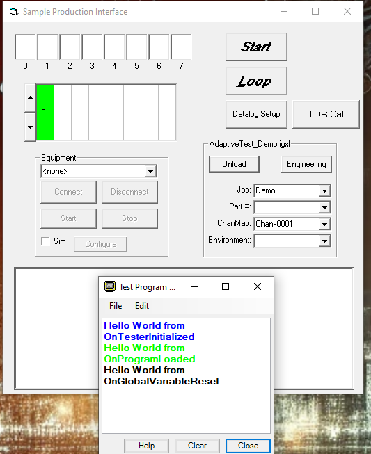
Step 2: Start the DAS
Start the DAS in order to interact with the UltraEdge System
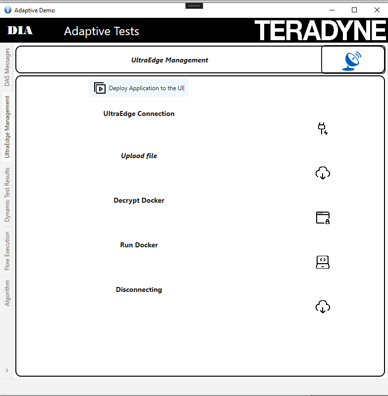
Step 3: Start the DAS
Be sure that your UltraEdge VM is started. Click on "Deploy Application to the UE"
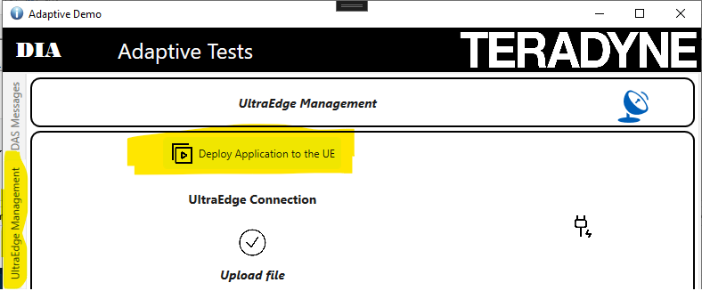
Step 4: Execute the Program in Loop Mode
Click the Loop button to execute the program 10 times. Once completed, press the Stop button.


Step 5: Visualize the Test executed
In the demo application, click Update Test Limits. Use the slider to modify the thresholds, then click Send Limits to apply them.
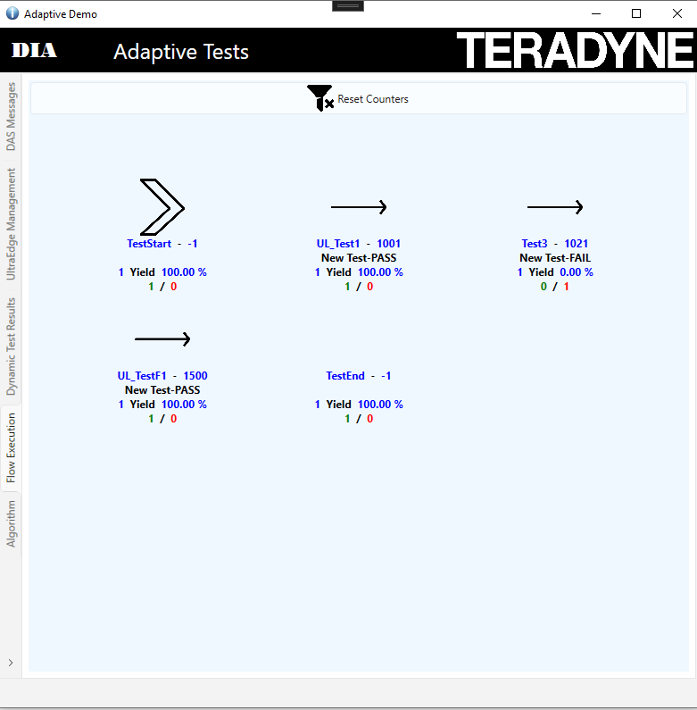
The following table represents the different tables
| Icon | Description |
|---|---|
| Test Start Icon | |
| Test End Icon | |
| Test Executed | |
| Test Not Executed | |
| Test Disabled by an Adaptive command | |
| Limits updated by an Adaptive command |
For each test the following data will be displayed
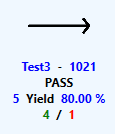
| Data | Description | |-------------|------------------------| | Test3 | Represents the test name | | 1021 | Represents the test number | | PASS | The last execution was PASS | | 5 | Number of times the test has been executed | | 80.00% | Yield of this test | | 4 | Number of Pass | | 1 | Number of Failure |Run the test a few times from the SimpleOI interface to observe the impact.
Step 6: Observe the New test Activated
Loop the test program till you observe that the new test has been enabled. After few runs you will see that the test UL_TestF1 has been activated.
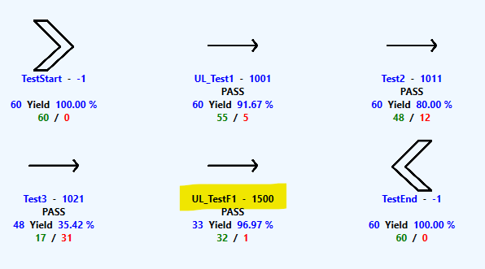
As well you can observe that a new message has been generated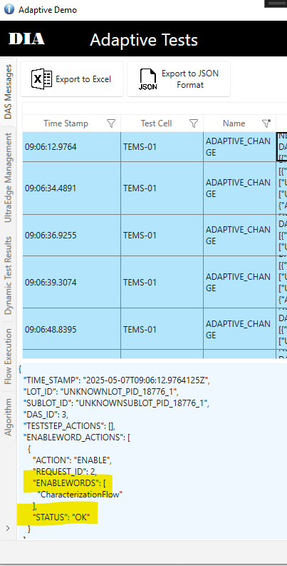
And as well a message will be added into the test program output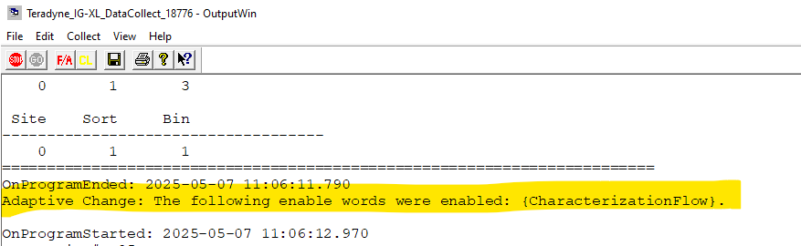
Step 7: Automatic Test Limit Updated
After few tests, you will observe that the high limit of the TestF1 will be updated. You can observe that into the tab Dynamic Test Results
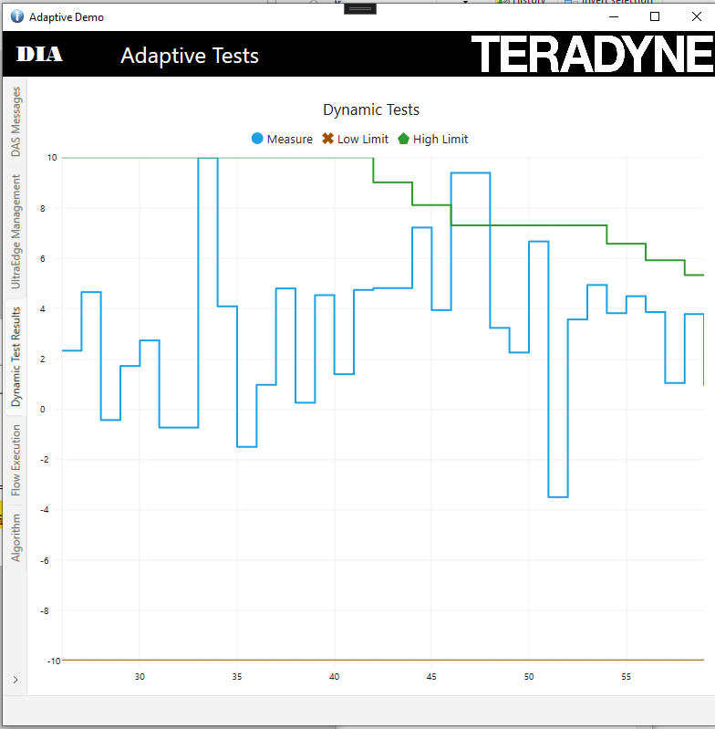
And you can observe some messages into the test program output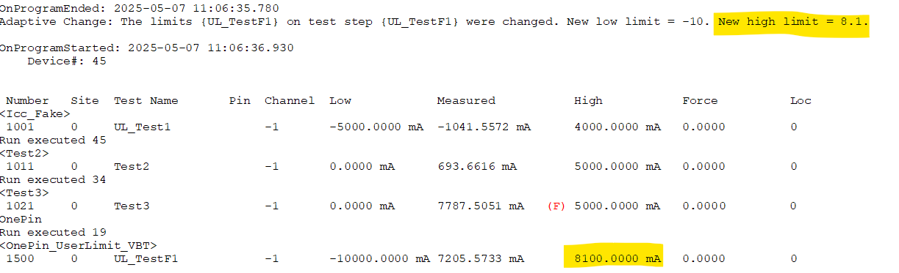
Finally we can observe Adaptive Message are generated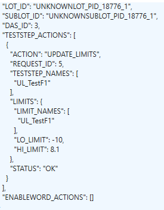
Step 8: Test Disabled
As soon as the test2 reachs the yield of 80% it will be disabled by an Adaptive test command
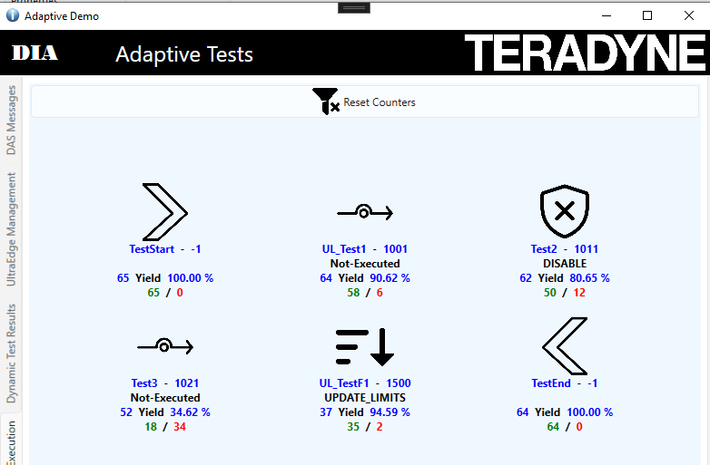
Step 9: Check the STDF File
Stop looping the test program and click and Datalog Setup on the SimpleOI
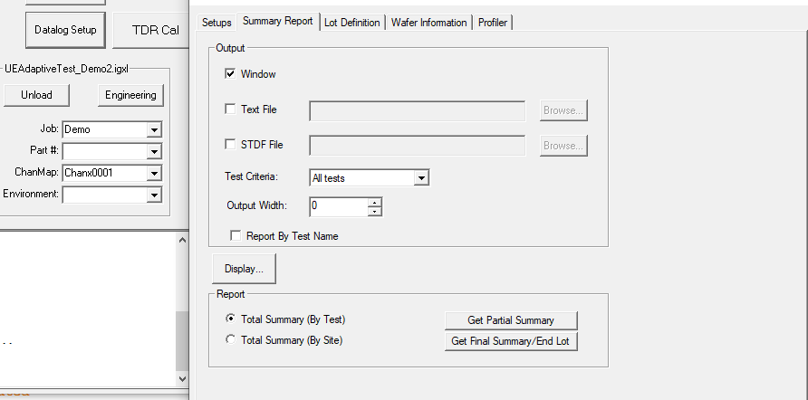
Click on Get Final Summary End lot With an STDF Browser check the most recent STDF file located into C:\STDF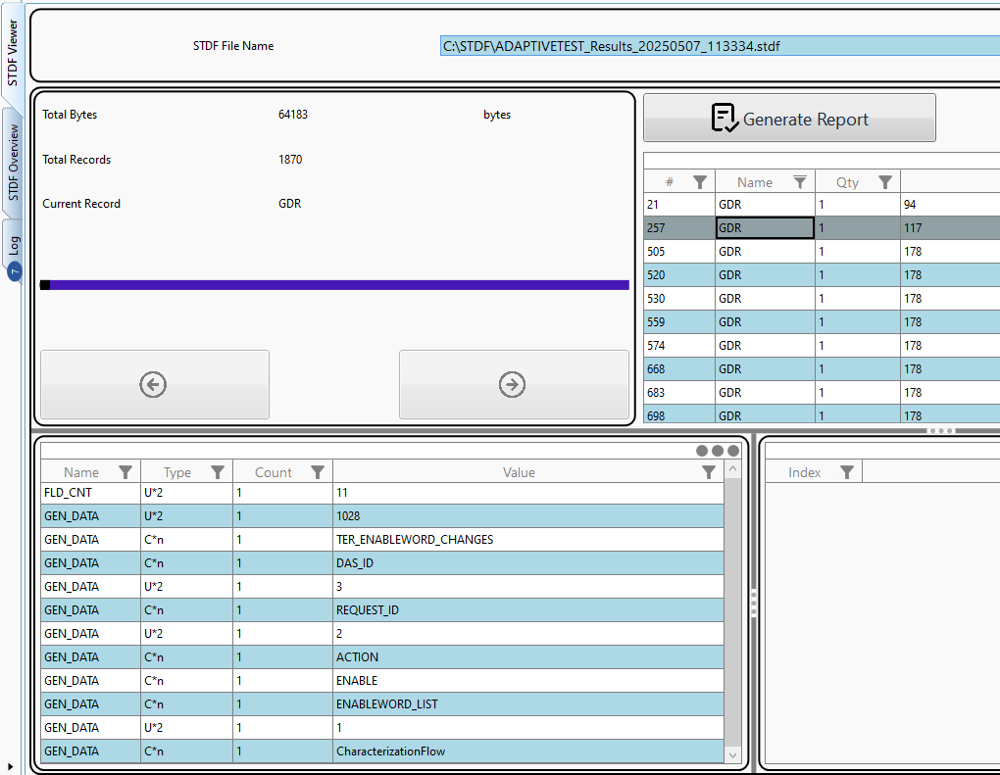